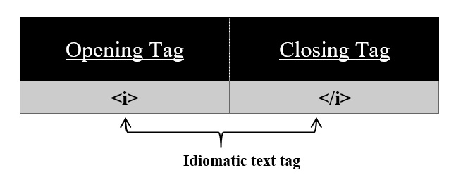

Idiomatic text element or <i> tag used to represent a change in mood or quality of text
Syntax:
<i>
//content
</i>
We can use this <i> tag to mark phrases in a different language, to highlight someone's thoughts.
All the content in between this tag is displayed in italic. <i> tag has also its corresponding </i> tag.